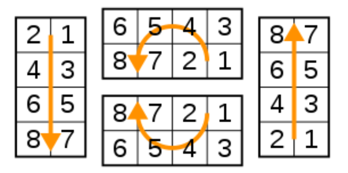
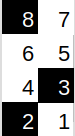
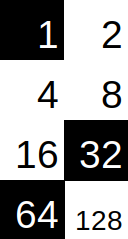

How to decode QR codes by hand
QR codes are everywhere! From ordering food to getting event info I'm contstantly scanning them. I've always thought they were extremely complex and only veteran programers could understand their inner workings.
However, that is not true! They are actaully quite simple and hopefully, after reading this article, you will have a basic understanding of how they work.
What are QR codes?
[They mostly used just for links other basic information.]
QR code "zones"
Before you can decode QR codes you have to know the different parts of a QR code!
QR codes contain 3 "zones":
- Camera alignment
- Formating data
- Data
The names are mostly self explanatory!
The camera alignment (Pink) section is for helping cameras align the QR code correctly.
The formating data (Blue) section contains general formating information for the QR code. This includes the error correction level and mask pattern and "Dark Module"!
The data (Green)section contains the actual data (Usually a hyperlink!) and all error correction partity data.
I will go over all these sections in detail.
Camera alignment
The camera alignment zone only has two parts:
- Position squares
- Timing belts
Both of these are just so cameras can align the QR code properly so the data can be easily read. The position squares are on 3 corners of the QR code and look like this:

The timing belts connect each position square and always alternate between black and white pixles as seen here:

Formating data
The formating data is stored next to the camera alignment boxes. This data is:
- Error correction format [0-9]
- Mask pattern [10-11]
- Error correction level [13-14]
- The "Dark Module" []
All data is duplicated for redudency. If a square has the same number its an exact copy in both positions!
The math behind the error correction is too complicated and mostly not important (Especially for humans!) so I'm not going to give a detailed explination. About half of the data area is used for error correction.
[Should I talk about low medium error correction levels?]
However, the mask pattern (Lime green) is needed to properly deocde the data.
A mask is used to make the data less "organized" and easier to read. Its easiest to show this with a picture! Can you tell how many boxes wide this is?

Its kind of hard! There is no way to tell where one square ends and the next begins. Now try this:

Much easier! Whenever you create a QR code there is an algorthem that chooses a mask pattern that minimzes the amount of continues colors.
In the case above, I used mask pattern 101 which flips every other box to the opposite color. The picture below shows which ones I flipped to follow that mask pattern (F means the box was flipped):

There are 7 total mask patterns that you can apply to a QR code. The three lime green boxes indicate which one to use. Once you figure out which mask pattern is being used you just have to overlay the data section with it! Everytime the mask pattern has a black box you flip the color of the box below it.

The animation below shows the process of decoding the QR code. In this case the mask is still 101 so we just flip every other data box (Igore all camera alignment and formating data sections)!
First, it goes over every single data square and puts an "F" where It needs to flip. It then flips all the "F" squares.
ADD TOGGLE TO TURN ON AND OFF NUMBERS!
MAKE A BETTER VERSON OF THIS. Show where to find the mask pattern again and also talk about skipping the timing belts.
Also add picture alightment color and format data colors
Reading the data
We have now unmasked the data! All there is left to do is to read the data itself.
I've made a graphical representation of the data below.
- Data encoding [1]
- Length [2]
- Data (Characters) [3-6] *
- End of data [7]
- Error correction [8] * All shades of green are characters. They are different colors to differencate themselves.
THIS IS STILL THE MASKED DATA! NEED TO SWITCHED TO UNMASKED!!!!!!!!!!!!!!!!!!!
Also make sure to add number toggle :)
Understaning the sections
The first section, data encoding is simple! Data encoding is how and what data is being stored. Because you can store URLS, letters, numbers and much more in QR codes and these 4 squares tell what is in the given QR code!
Length is just the length (In 8 square sections) of the data! In our case (length 4), the length indicates how many letters are being stored but depending on what is encoded it might not exactly match up.
Characters / data is by far the most important part of the QR code. These sections contain the letters or numbers that actaully make up the
Readin the squares
Now that we know what the firt two squares represent we need to be able to actaully read them! I will skip the encoding section as it is isn't useful for decoding URLs or text.
To read the squares
All the data stored in the QR code is in binary. The black squares are ones and the white squares are zeros! However, explaining binary is too complex of a topic for this page so I'm going to give you an easier way of reading the data from the QR code.
First, look at the diagram below. This diagram has the basic structure of all QR codes! The first four squares are for encoding mode (e.g is the QR code storing a number, URL, or something else!)
The next 8 squares tell you the length of the data stored. In our case, each rectangle only stores one letter so this is the length of our word!
Lets see how long our word is in our QR code!
QR code is opposite direction. AKA 128 is at 1 instead of 8...
Before we are able to read the data we need to understand how to read binary! Luckily, its not difficult.
As you probably know, binary is just a buncy of ones and zeros. We call each one or zero a bit! For example 101001 would be 6 bits. Because our QR code is an image and not a string of numbers we represent 1's as black boxes and 0s as white (Think of it like white being the default (0) and black being "on" (1)).
One bit by itself can't store much (Only 1 or 0!) so we combine a set of bits into. In our case we will be These bytes will each represent one number or letter!
This would be 10011This is what a QR code looks like when its split up into the different sections:

The actaul data is in the 1 byte sections but there are also some 4 bit sections (Called nibbles!). They are just for giving the encoding type of the data and to indicate where the data ends and the error correction starts.
The image above shows you what direction to read the binary! Depending on the direction, the order of the bits is different.
This would be 01100001Technically this is good enough! If you look up 01100001 you'll see its the letter "a" which is correct. However, this is a sort of impractical! A better way to do this is to add up the squares and use a table.
Adding all the black bits up you get 1 + 32 + 64 = 97Using this table we can look up 97 and we get "a"! This method is a little more practical as you can also use it to get the length of the text from the second QR code data point

[FIX ABOVE SENTENCE]
1. Make sure understand what binary is. 2. Explain how 1, 0 is black and white in QR code 3. Explain the layout of the QR code. (e.g enc, then length, then 8 bit segments) 4. Explain how to read it. Different direction is different order 5. Explain how to add up (1 + 32 + 64) and to use table. <-->